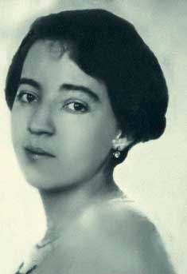

Cubismo
Anita Malfatti
Tabela
| Nome da obra | Ano | Técnica |
|---|---|---|
| O homem de 7 cores | 1916 | Carvão sobre papel |
| A Mulher de Cabelos Verdes | 1916 | Óleo sobre a tela |
| "Nu cubista n° 1" | 1915 | Óleo sobre a tela |
| "Composição cubista " | 1915 | Óleo sobre a tela |
Clique em Galeria para ver as respectivas obras